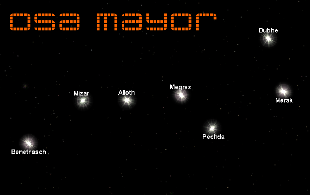

Material didáctico: Osa mayor
Celestia (www.shatters.net/celestia) es un software de fuentes abiertas para el turismo espacial virtual. Esta es una imagen de la Osa mayor tomada en este interesante software. Nuestro propósito es añadir halos en los lugares de las estrellas para que la imagen sea más comunicativa.
Resumen de los preparativos
Comenzamos por añadir la imagen en el Editor de nodos para que aparezca en el render. En el entorno de trabajo Compositing este es un resumen gráfico de la configuración final.

De regreso al entorno Default lo primero es ajustar el tamaño del Render  al de la imagen descargada (821x518px).
al de la imagen descargada (821x518px).
Y por último nos queda que la imagen se vea en el Editor 3D desde las vistas ortográficas y el punto de vista de la cámara. Lo preparamos, como ya es habitual, desde el cuadro Propiedades ("N"). En esta ocasión subimos algo el valor de Opacidad porque la imagen es muy oscura.
Nos deshacemos del cubo por defecto, nos colocamos en el punto de vista de la cámara ("Control_Alt_NumPad 0") y sacamos un plano (Añadir/Malla/Plano), pero antes de tocar nada nos vamos al cuadro Herramientas ("T") para escoger Alinear a la vista en sus opciones.
Ya en Modo Edición  usamos los cuatro vértices para las cuatro estrellas de la derecha. Lo mejor es pasar a sombreado Alambre.
usamos los cuatro vértices para las cuatro estrellas de la derecha. Lo mejor es pasar a sombreado Alambre.
Y ahora selecionamos  el vértice correspondiente a la estrella Megrez para hacer una primera extruxión ("E") hasta Alioth...
el vértice correspondiente a la estrella Megrez para hacer una primera extruxión ("E") hasta Alioth...
...luego otra extruxión ("E") desde Alioth hasta Mizar...
... y la última desde Mizar hasta Benetnasch...
Al haber una imagen tan oscura de fondo no se aprecia bien, pero en cualquier otro punto de vista, o si desactivamos la imagen de fondo, este es el modelado.
A este objeto le aplicamos un Material  de tipo Halo. El render es algo así.
de tipo Halo. El render es algo así.
Lo que queda es configurar al gusto. Por ejemplo:
La diferencia es considerable en el render.
